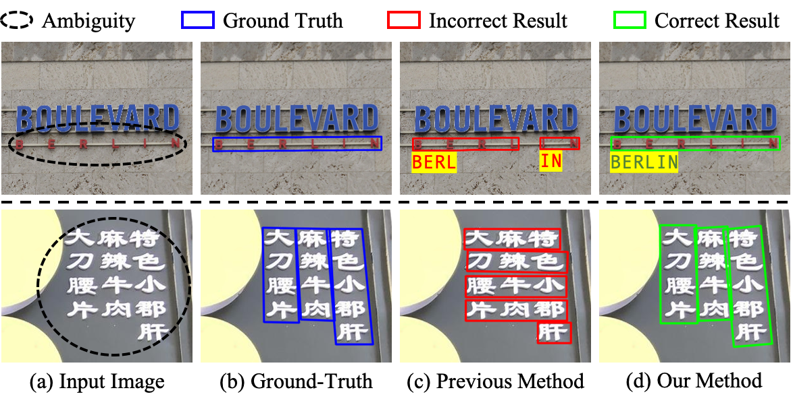

Enze Xie (谢恩泽)
CV / GitHub / Google Scholar / Zhihu / Email: Johnny_ez@163.com | xieenze@hku.hk

I am a PhD student in The University of Hong Kong (HKU) since 2019.10, supervised by Dr. Ping Luo and co-supervised by Prof. Wenping Wang. I am also a research intern at Sensetime. Before that, I was a research intern at Face++ Detection Group, supervised by Mr. Shuai Shao and Dr. Gang Yu. I also work very close with my friend Wenhai Wang and Prof. Chunhua Shen. I obtained my bachelor degree from Nanjing University of Aeronautics and Astronautics and master degree from TongJi University.
My research interest includes computer vision and deep learning.
Publications and Manuscripts
(* indicates equal contribution)Conference
Segmenting Transparent Objects in the Wild
Enze Xie, Wenjia Wang, Wenhai Wang, Mingyu Ding, Chunhua Shen, Ping LuoECCV2020 [arXiv] [code & dataset]

Scene Text Image Super-Resolution in the Wild
Wenjia Wang*, Enze Xie*, Xuebo Liu, Wenhai Wang, Ding Liang, Chunhua Shen, Xiang BaiECCV2020 [arXiv] [code & dataset]

Differentiable Hierarchical Graph Grouping for Multi-Person Pose Estimation
Sheng Jin, Wentao Liu, Enze Xie, Wenhai Wang, Chen Qian, Wanli Ouyang, Ping LuoECCV2020 [arXiv]

ECCV2020 [arXiv] [Project Web]
AE TextSpotter: Learning Visual and Linguistic Representation for Ambiguous Text Spotting
Wenhai Wang, Xuebo Liu, Xiaozhong Ji, Enze Xie, Ding Liang, ZhiBo Yang, Tong Lu, Chunhua Shen, Ping LuoECCV2020 [arXiv] [Project Web]


Efficient and Accurate Arbitrary-Shaped Text Detection with Pixel Aggregation Network
Wenhai Wang*, Enze Xie*, Xiaoge Song, Yuhang Zang, Wenjia Wang, Tong Lu, Gang Yu, Chunhua ShenICCV 2019 [arXiv]

Scene Text Detection with Supervised Pyramid Context Network
Enze Xie*, Yuhang Zang*, Shuai Shao, Gang Yu, Cong Yao, Guangyao LiAAAI 2019 [arXiv]
Tech Report
1st Place Solutions for OpenImage2019--Object Detection and Instance Segmentation
Yu Liu, Guanglu Song, Yuhang Zang, Yan Gao, Enze Xie, Junjie Yan, Chen Change Loy, Xiaogang WangTech report, arXiv:2003.07557 [arXiv]

Experience
SenseTime Research, Beijing, China
2019.07 – 2020.03
Research Intern
Mentor: Mr. Ding Liang
Detection Team, Megvii(Face++) Research, Beijing, China
2018.04 – 2019.07
Research Intern
Mentor: Dr. Gang Yu
Challenges
Rank 1 in Open Images 2019 - Instance Segmentation
2019
2019
2019
Professional Activities
Reviewer for CVPR, WACV, ACCV
Presentation
Hong Kong Computer Vision Workshop(HKCVW) : "Realtime Text Detection"
2019
Microsoft Research Asia (MSRA) VCG : "New Representation in Instance Segmentation"
2020
Honours and Awards
Outstanding Master Thesis Award, Tongji University
2019
modified from © Yangqing Jia 2013